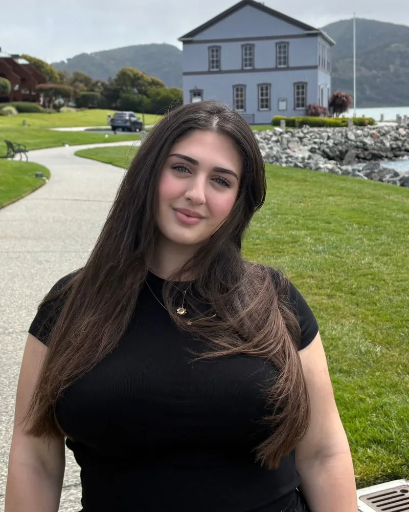

About me
Hi, I’m Erva
Computer engineer in Istanbul — I design, build and ship.

I'm Erva, a 22-year-old computer engineer in Istanbul, and technology is the thing I never get tired of. I like working across the whole stack — cloud infrastructure and Kubernetes, applied AI, and the mobile apps people actually hold in their hands.
What pulls me in is taking something that already works and making it work better: a cluster that stops wasting money, a model that reads messy medical records, an app that makes deciding where to eat a little easier. Right now that's Yedik — I'm building it end to end, from the Go API to the App Store.
- Long walks
- Vibe coding
- Trying new places
- Technology
- Cosmetics
- Dermatology
- Based inIstanbul, Türkiye
- PublicationSafety-Gated Autoscaling — arXiv:2607.26503, 2026
- Currently readingThe Phoenix Project — Kim, Behr & Spafford